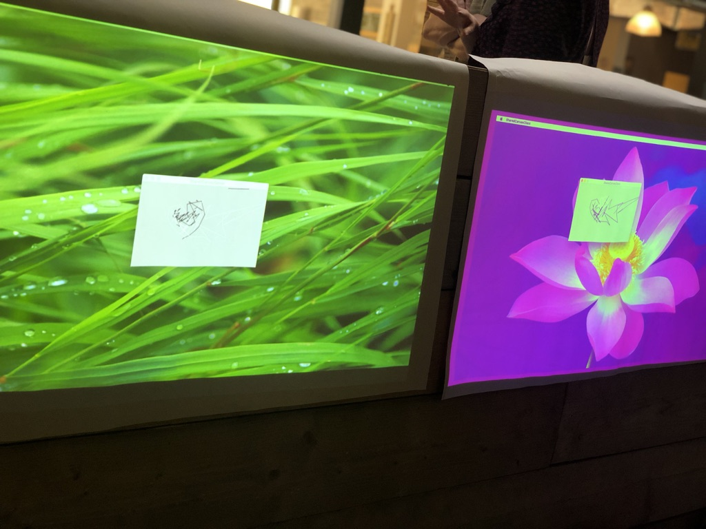
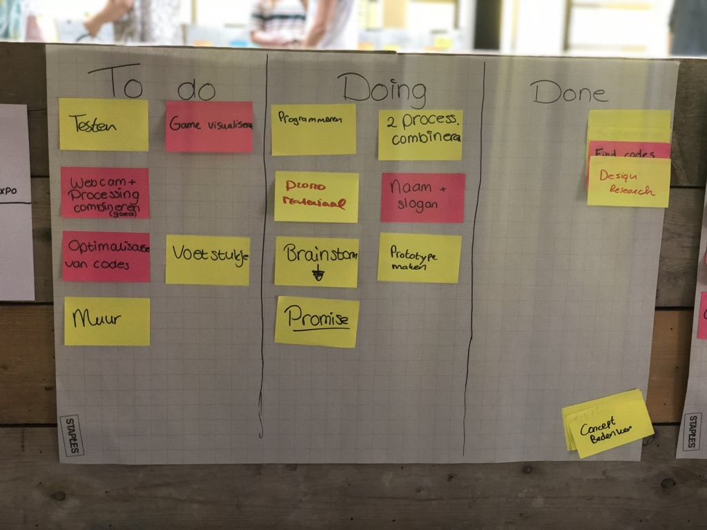
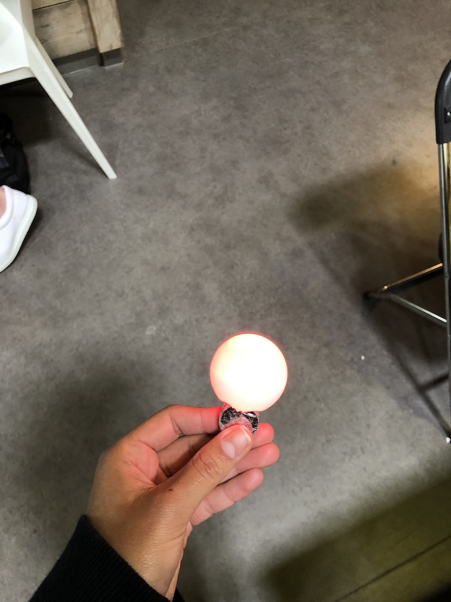
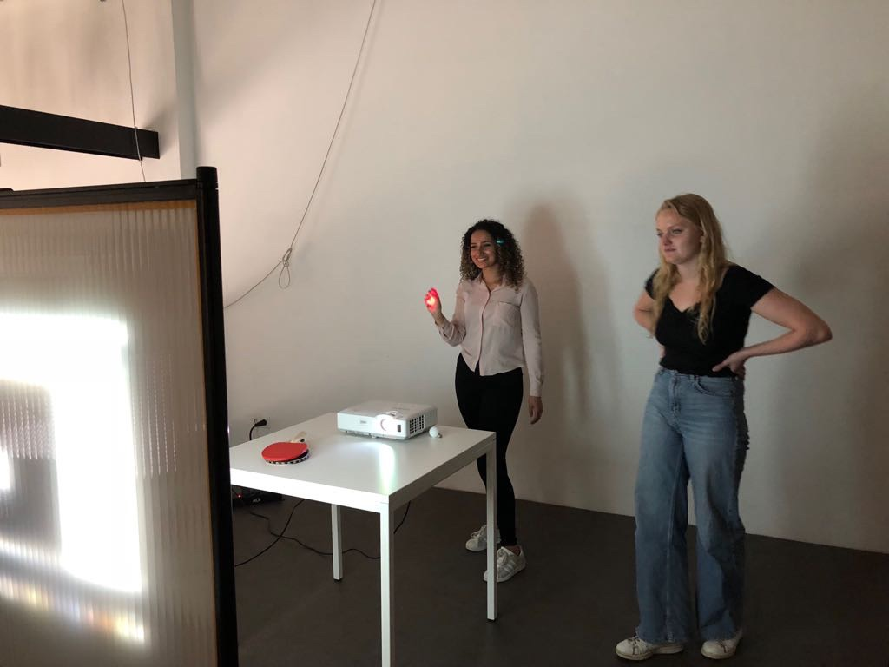
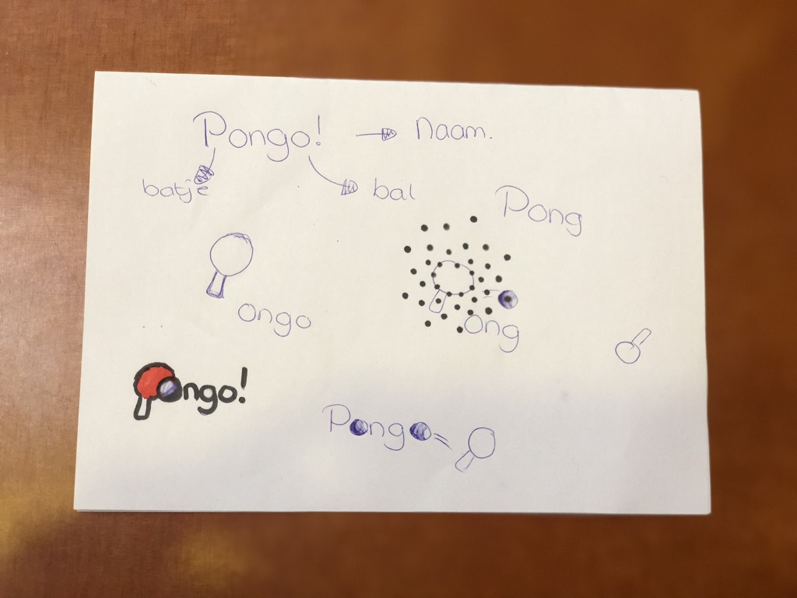
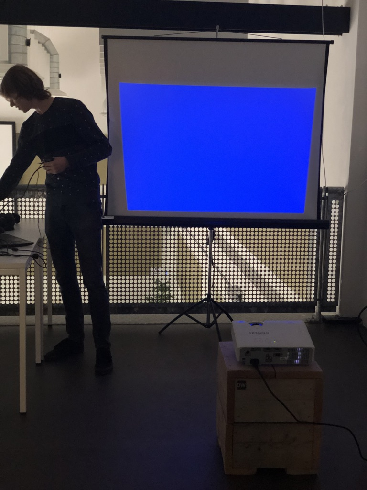
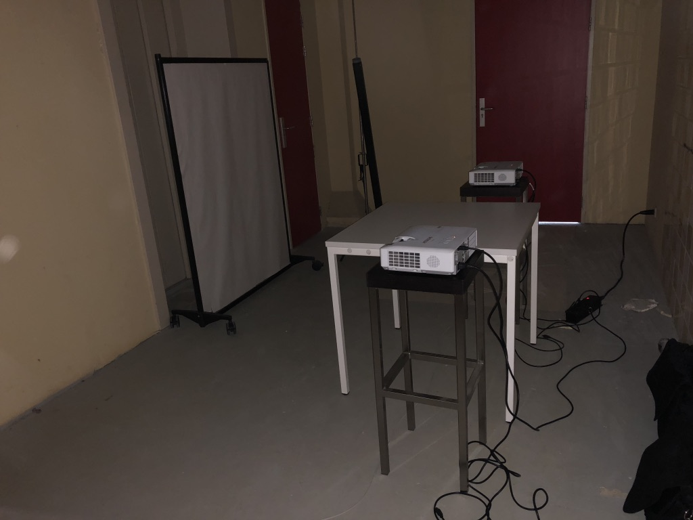
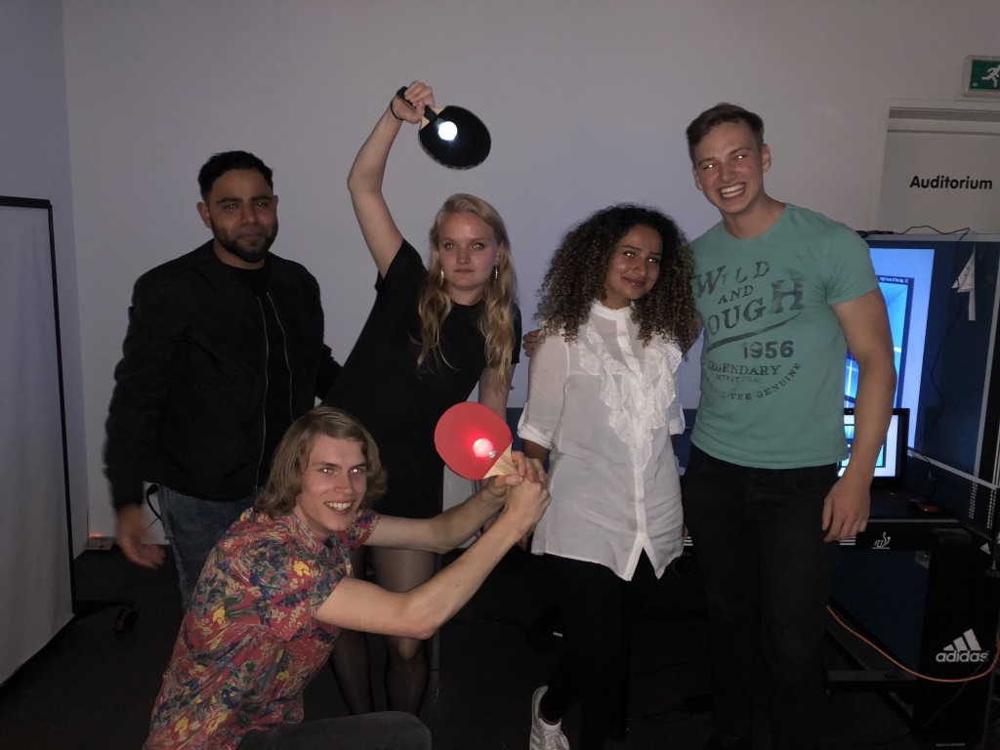

Lab weeks - Exertion Gaming
Op deze pagina is te lezen hoe mijn twee weken in het DIF (Dutch Innovation Factory) te Zoetermeer zijn gegaan. Hier is gewerkt aan een project over een van de onderwerpen die eerder in het portfolio zijn beschreven. Voor mij was dit Exertion Gaming, het aller eerste onderwerp wat ik ook een van de leukste onderwerpen vond.
Het Proces
Hieronder heb ik mijn dagelijkse activiteiten en mijn emoties bijgehouden. De communicatie met mijn groepje en de doelen die zijn gesteld heb ik ook genoteerd en zo heb ik een sort dagboekje samengesteld.
Dag 1/10 - 4 juni 2018
 Op de eerste dag wist ik niet helemaal wat ik kon verwachten. Er was om 09:00 afgesproken, maar niets ging volgens plan. Na een klein half uurtje was alles geregeld en werd er een korte inleiding gegeven, over de dagen dat we in de DIF (Dutch Innovation Factory) zouden zitten.
Op de eerste dag wist ik niet helemaal wat ik kon verwachten. Er was om 09:00 afgesproken, maar niets ging volgens plan. Na een klein half uurtje was alles geregeld en werd er een korte inleiding gegeven, over de dagen dat we in de DIF (Dutch Innovation Factory) zouden zitten.
Ik kwam in een groepje terecht met vier anderen, die ik totaal niet kende. Gelukkig is het niet moeilijk voor mij om te communiceren en te werken met “onbekenden”, dus het kwam na een korte bespreking goed.
Hierna ben ik begonnen met het schrijven op de grote bladen voor ons to-do lijstje en heb ik een extra blad gepakt voor de ideeën die tussendoor bij ons opkomen. Dit zijn dingen die ieder groepje moet doen, om zo de progressie bij te houden.
Om te beginnen heb ik aan de groepsleden gevraagd of zij wilden brainstormen omtrent het onderwerp Exertion Gaming, dit onderwerp heb ik eerder in mijn portfolio uitgelicht. Zij vonden het moeilijk om erover na te denken, maar ik heb toch geprobeerd ze te pushen om op die manier na te denken. Uiteindelijk is het deels gelukt en hebben we de uitkomsten samen besproken. Zo is er gedivergeerd en kon het convergeer proces beginnen.
Uiteindelijk zijn mijn groep en ik op het idee gekomen om een pong spel te programmeren, maar niet zomaar een pong spel. Dit spel is te herkennen, omdat het vergelijkbaar is met het oude vertrouwde pong spel. Het verschil wordt dat het virtueel wordt gespeeld en dat er zomaar een tegenstander wordt uitgekozen om mee te spelen. Dit kan iemand over heel de wereld zijn.
Dag 2/10 - 5 juni 2018
Het idee van gisteren is vastgehouden en zo is iedereen aan de slag gegaan. Er is een taakverdeling geprobeerd te maken, maar dit ging helaas niet zo soepel. Drie personen uit de groep hebben zich gericht op het coderen. Een ander was bezig met het design van het spel en ik ging op zoek naar codes die gebruikt konden worden voor het spel. Zo zijn er veel codes gevonden en is er later gefilterd welke nuttig waren en gebruikt konden worden.
Na het opzoeken van codes ben ik ook aan de slag gegaan met het uiterlijk van het spel. Zo heb ik verschillende schetsen gemaakt en deze laten zien aan de groep en is er een uiteindelijk conceptueel ontwerp gemaakt. Zelf vind ik het idee steeds oninteressanter worden, want het is heel erg voor de hand liggend. Het is een spel, maar dan gevirtualiseerd. Zelf heb ik veel groostere ideeën, maar het lijkt net of de rest van de groep naar het makkelijke wilt neigen.
Dag 3/10 - 6 juni 2018

Ook vandaag ben ik weer doorgegaan met het opzoeken van codes. Na gisteren de hele dag gezocht te hebben, hadden we een spel gevonden. Deze konden we als basis gebruiken.
De volgende stap was moeilijk te maken, we wisten namelijk niet hoe we verder moesten. Hierom heb ik veel om advies gevraagd van docenten en een andere begeleider. Iedereen vertelde mij wat anders, dus ik raakte alleen maar nog meer in de war.
Uiteindelijk heb ik het advies van een vrouwelijke docent opgevolgd en ben ik op zoek gegaan naar codes voor het combineren van twee schermen om er een multiplayer spel van te kunnen maken.
Dit was niet zo een succes, het was heel moeilijk om een code te vinden die voldeed aan de eisen. Hierom heb ik weer om hulp gevraagd aan dezelfde docent die het advies gaf om op zoek te gaan naar de code. Zij had een code gevonden, die blijkbaar in Processing zelf stond, deze konden wij goed gebruiken en zijn wij meteen begonnen met het testen met twee beamers. Hieronder is een foto te zien van de code die we hebben gekregen, die te gebruiken is op twee schermen via een laptop. Alles wat op het ene processing scherm wordt gedaan, is ook te zien op het andere scherm. Vandaag hebben wij dus besloten dat het niet haalbaar is voor ons om het spelletje “online” te krijgen.
Dag 4/10 - 7 juni 2018

Vandaag was weer een dag met een boel onduidelijkheden en stress. Gisteren hadden wij gepland om een piepschuimen bord in elkaar te zetten en te gebruiken als beeld voor de beamers op de dag van de expositie. Voor een lange tijd ging ik op zoek naar piepschuimen platen op Marktplaats. Ik heb zelfs contact opgenomen met mensen, om de platen op te halen. Na een tijdje werd ons verteld door een docent dat wij ook een bord zouden kunnen gebruiken en deze konden beplakken met papier. Zelf vond ik dit een minder leuk idee, want het gaat er niet zo leuk uitzien. Dit onderwerp hebben wij even achter ons gelaten en we zijn aan de slag gegaan met een promise voor op de expositie.
Om 12:00 was er vandaag een presentatie van een bedrijf genaamd Next Empire. Deze presentatie heeft mij best wel geïnspireerd en aan het denken gezet. Na een brainstormsessie met de groep, zijn we dan ook tot de keuze gekomen om gebruik te maken van Color Tracking voor ons spel.
Hiermee doelen wij erop om gebruik te maken van een ping pong batje met een opvallende kleur, of een lichtje wat opvalt. Zo kan de camera de kleur tracken en kunnen we dit gebruiken om het ping pong balletje mee te slaan.
Dag 5/10 - 8 juni 2018

Vandaag zijn we op de helft van de Lab Weken. De ochtend begon zoals altijd weer om 9:00 en er werd een preek gegeven door Chris. Hij benoemde een aantal punten die minder goed gingen en hier was ik mee eens. Hierna heb ik geprobeerd om mij toch nog een beetje extra te richten op de hygiëne van de ruimte waarin wij ons bevinden. Zelf ben ik namelijk altijd de persoon die alles schoonmaakt en opruimt.
Hierna konden we aan de slag en het was eindelijk de dag dat ik ook wat meer input zou kunnen hebben, dacht ik... We waren van plan om een piepschuimen muur te maken met piepschuimen platen, maar dit ging toch weer niet door... Ondanks dat ik contact had met verkopers van de piepschuimen platen, hebben wij alles af moeten zeggen. Wel hebben wij nog wit behang gekocht bij de Action, om een scherm te beplakken, die we aangewezen hebben gekregen van een docent. Dit willen wij gebruiken voor de beamer.
Ook voor het Color Tracken is er vandaag iets bedacht. In de action hebben wij ook ping pong ballen gekocht, hier heb ik een fietslichtje ingeplakt. Dit is makkelijker voor het systeem om te herkennen.
Dag 6/10 - 11 juni 2018

Vandaag heb ik eindelijk het scherm voor de beamer kunnen bepplakken met behang. Het ziet er echt niet leuk uit naar mijn mening. Het ziet er enorm amateuristisch en nietszeggend uit. Wel hebben we het fijn kunnen gebruiken voor het testen met het lampje. Het werkt tot nu toe wel goed, maar er moest gezocht worden naar meer codes. Zo kon de game geoptimaliseerd worden. Ik heb gemerkt dat deze taak op mij wordt geschoven, omdat ik altijd aankom met de beste zoekwoorden en de beste stukkken code. Dit vind ik niet erg om te doen, maar het kan ook door anderen gedaan worden. Eigenlijk moet ik leren om niet alles zelf te doen en ook dingen over te laten aan anderen.
In de middag hebben wij een brainstormsessie gehad, waar bijna niets uit is gekomen. Dit heb ik achterwege gelaten en ik ben ons product zelf gaan testen en heb ook aan anderen gevraagd of zij voor ons wilden testen. Na dit gedaan te hebben, zijn de testresultaten besproken en is er nagedacht over de expo. Ik heb bedacht dat wij het best een donkere ruimte kunnen gebruiken, dus ik heb rondgevraagd of dit een mogelijkheid is.
Dag 7/10 - 12 juni 2018

Vandaag vond ik het een goed idee om tests te doen met het batje wat we momenteel hadden. We hebben voor een echt ping pong batje gekozen en hier heb ik het eerder gemaakte balletje met lampje erin opgeplakt. Hiermee zijn er weer tests gedaan en dit ging meteen al veel beter. Het was ook wat gebruikelijker en duidelijker wat er gedaan moest worden. Met een balletje waar een lampje in zit, wisten sommige testers niet helemaal wat zij moesten doen.
De achtergrond voor de beamer is nog steeds een issue voor ons. We zijn nog steeds aan het bedenken wat we het best kunnen gebruiken. Vandaag kwam Rick met het idee om een echt scherm te gebruiken als achtergrond voor de beamer. Hierop merkte ik meteen dat groepsgenoten negatief gingen doen, maar Rick en ik zijn dit toch gaan testen in de donkere kamer. Hier mogen wij testen van de docenten en het wordt ook onze expositieplaats.
Na dit getest te hebben en de rest van de groep overgehaald te hebben, heb ik geholpen met het ontwerpen van een wat aantrekkelijkere achtergrond voor de game.
Als laatste heb ik op deze enorm productieve dag een logo ontworpen voor onze game. Deze taak hebben Emmaly en ik samen uitgevoerd.
Dag 8/10 - 13 juni 2018

Vandaag ben ik zo enorm enthousiast! Er komen namelijk kinderen van de basisschool langs om te zien wat wij allemaal hebben gemaakt. Hier is natuurlijk gebruik van gemaakt en wij hebben de kinderen geworven, om ons product te testen. Bij de meeste kinderen is het wel in de smaak gevallen, maar af en toe was het wat onduidelijk. Wij hebben hun feedback gebruikt en ervoor gekozen om het batje wat wij hadden geprogrameerd, vervangen door een vakje. Zo is het wat realistischer en is het duielijker dat de gebruiker het batje in het echt gebruikt om het balletje in het spel te slaan.
Het spel heeft verder ook nog geen geluiden, maar vandaag hebben wij een geluidje in processing toegevoegd. Het was ook meteen leuker om te doen, want nu had je ook interactie. Een geluidje heeft zo een groot effect op het gehele spel.
Helaas was er ook een discussiepuntje vandaag binnen de groep. Zoals in het begin ook al was bepaald, wilden wij er een single player game van maken. Later dachten wij dat het niet mogelijk was, maar blijkbaar is het toch wel mogelijk. Het was meer de negativiteit van het groepje. Toen ik met docenten sprak over dit probleem, gaven zij mij gelijk. Zo wist ik dat het niet aan mij lag. Mijn groepje was niet bereid om meer moeite te steken in het project, dit is hoe het op mij is overgekomen. Het was zeer energierovend voor mij om positief te blijven, tussen mensen die bijna tot geen moeite willen steken in hun werk.
Dag 9/10 - 14 juni 2018

Vandaag heb ik eindelijk de hulp van een docent ingezet, want het is mij niet gelukt om de groep te motiveren. Door een docent in te schakelen, namen ze het meteen veel serieuser. Er is een evenement in het DIF, waardoor wij niet kunnen testen in de kamer waar wij normaal testen. Het leek net of het niemand boeide, dus ik heb weer in mijn eentje een opzet geregeld om te testen in een reserve kamertje in het DIF. Dit heb ik kunnen regelen met behulp van een docent.
Omdat we nu eindelijk toch een multiplayer spel gaan maken, hadden we nog een batje nodig. Deze ging ik weer in elkaar zetten, maar ik merkte dat een ander groepsgenootje dit van mij over wilde nemen zonder dit met mij te bespreken. Ik had het gevoel dat ik onderuit werd gehaald. Het was opeens veel moeilijker dan normaal om op te komen voor mijzelf.
Dit gedrag vind ik totaal niet collegiaal en ik zou het liever niet nog een keer mee willen maken. De negativiteit komt echt steeds hoger en hoger, waardoor mijn energie opraakt.
Dag 10/10 - 15 juni 2018

Vandaag is dan eindelijk de laatste dag, ik keer er enorm naar tegenop. Ik was totaal niet gelukkig met ons eindresultaat, dus ik wilde dit ook niet laten zien aan anderen. Tot mijn verbazing gaat alles best wel goed vandaag. Iedereen deed enorm zijn best en ik vond het vandaag gewoon leuk om aanwezig te zijn! Het was dus nergens voor nodig om tegen vandaag op te zien. Waarschijnlijk had iedereen door dat de expositie dichtbij is, dus zij gingen hard werken.
Er zijn aanvullingen gedaan, er is toch een multiplayer spel geprogrammeerd waarbij beiden spelers een ander scherm hebben en aan de andere kant van de kamer staan. Zo zien zij elkaar niet, maar alleen het scherm.
Wel vond ik onze opzet in vergelijking met de rest van de groepjes heel erg tegenvallen. Hierna kwam een docent met het idee om een ECHTE ping pong tafel te gebruiken voor de expositie! Dit maakte mij zo enorm gelukkig. Ons eindproduct zag er zo leuk uit. Het trok echt de aandacht van mensen die langs liepen en zij waren enorm geinteresseerd.
Tijdens de expo heb ik trots kunnen vertellen wat ik samen met mijn groepje heb gemaakt!
Het Product
De opdracht die ik samen met mijn groepje had was het ontwikkelen van exertion game. Een exertion game houdt kortom in, dat het een spel is waarbij je ook je lichaam gebruikt. Dus beweging tijdens het spelen. Denk hierbij aan de Wii en de Kinect.
Voor deze opdracht hebben wij een ping pong game ontwikkeld, zonder dat je je tegenstander ziet. Die staat namelijk aan de andere kant van de ping pong tafel die niet helemaal open is geschoven.
Via een webcam wordt het lichtje op het batje herkend, dit wordt gebruikt om het balletje op het scherm te slaan. De gebruiker aan de overkant doet hetzelfde. Het wordt allemaal geregeld via een computer, waar meerdere beamers op aan worden gesloten.
Tijdens de expositie was het wel eens onduidelijk voor de gebruiker wat er precies gedaan moest worden, dit betekent dat het spel wat duidelijker gemaakt kon worden.
De mensen met de hoogste scores kregen een klein cadeautje aan het einde van de expositie.
Bekijk onze eindvideo!
Edited by: Emmaly Hertogs
Reflectie
Eerlijk gezegd is het mij echt tegengevallen, want ik was echt met een heel erg positieve mindset begonnen aan heel het vak en aan de Lab Weken in Zoetermeer. Vooral mijn groepsgenoten hebben mij teleurgesteld. Het was jammer dat ik met mensen in een groep ben geplaatst, die een 5,5 mentaliteit hebben. Dit is ook terug te zien in het eindproduct naar mijn mening. Er kon nog zo veel aan gedaan worden om het te optimaliseren, of er kon een geheel ander idee uitgewerkt worden. Dit spel is namelijk iets wat al bestaat, maar alleen maar verbeterd naar onze smaak en er zijn dingen aan toegevoegd.
Zelf had ik veel andere ideeën tijdens het proces, maar omdat mijn groepsgenoten zelden zin hadden om iets anders te doen was het moeilijk. Als ik niet zo veel aan had gedrongen, dan was het zelfs nog een singleplayer spel geworden met wat geluidseffecten.
Wel vind ik voor de rest dat de docenten mij en de rest van de groep goed hebben geholpen en tips hebben gegeven. Het vak en het idee achter alles vind ik heel erg mooi, maar ik had helaas ongeluk. Het was leuker geweest als dingen anders waren gelopen, maar het zij zo. Helaas heb ik geen mooie herrinneringen overgehouden aan de Lab Weken in Zoetermeer.
Als ik het over zou doen, dan zou ik meteen wanneer ik pessimisme voel naar de docent toe stappen en doorgeven wat er gaande is in de groep.